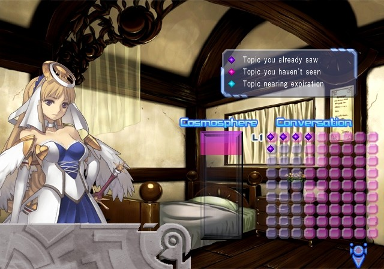

Cloche Cosmosphere
Revisit Items · Redo Charm & Lv.6-R
Keep リドゥチャーム charges stocked for Lv.4 and Lv.6. Re-entering Lv.6-R 共心周波数 awards costume プリティヴィオール that is otherwise skipped on single-pass dives.

Cosmosphere Levels Lv.1 – Lv.9 (incl. Lv.6-R)
-
Lv.1 灯しビトの夜. Opens early upon meeting Cloche. Introduces her harsh exterior, Red burst baseline magic, and スタンダード dress.
-
Lv.2 マネキ青春ノゴトシ. School life simulation uncovering her craving for normal peers. Awards costume モガスタイル.
-
Lv.3 ホウラク！？. Focuses on collapsing societal expectations and unlocks offensive Song Magic tiers.
-
Lv.4 叫ぶ優等生. Clear both choice branches via リドゥチャーム to gather full Talk Topics and earn メタモル委員長.
-
Lv.5 はざまの散歩道. Holds Cloche's パラダイムシフト decision point. Confirming unlocks deep levels and 愛染吉野.
-
Lv.6 恥僻放水. Main branch following Paradigm Shift. Rewards costume ヴィクティムペイン.
-
Lv.6-R 共心周波数. Alternate Lv.6 branch accessed with リドゥチャーム. Awards プリティヴィオール and bonus character dialogue.
-
Lv.7 黒いお花が咲く日. Cloche Route exclusive. Confronts her suppressed darkness and unlocks costume ハルマゲドン.
-
Lv.8 ＲＥＳＥＴ. Cloche Route exclusive during Phase 4. Clear trauma gates to obtain fluffy costume ふわりあ.
-
Lv.9 全ての愛抱きしめて. Final vow granting ホワイティリス bridal attire and endgame Red Hymmnos output. Extra costume ペペナ unlocks via インフェルスフィア Lv.2.